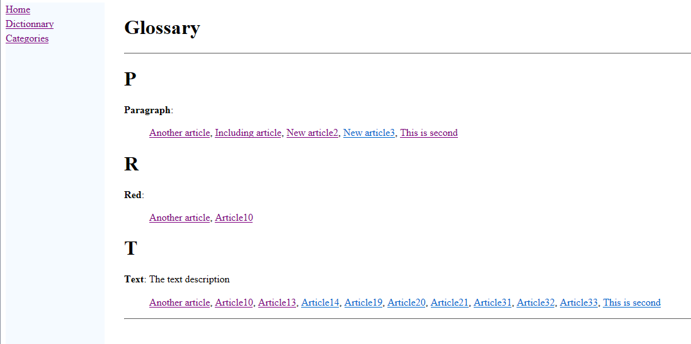
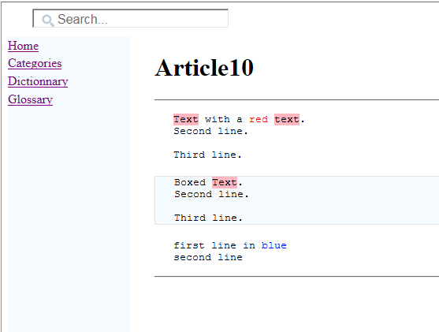
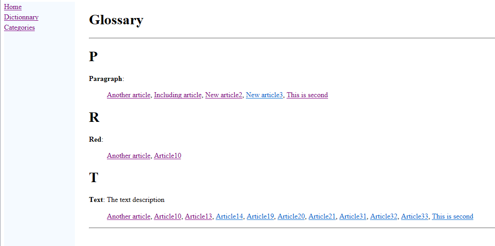
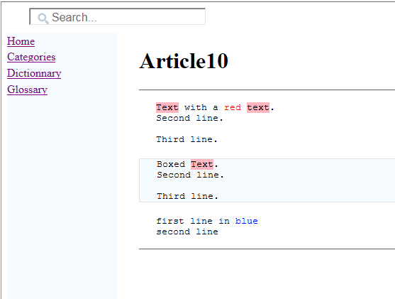

Glossary
1 Defining a glossary
1.1 Word alternate terms
1.2 Word case
1.3 Word description
2 Usage
3 Notes
4 See Also
1.1 Word alternate terms
1.2 Word case
1.3 Word description
2 Usage
3 Notes
4 See Also
It is possible to add a glossary to the wiki. Defining a glossary will add a new menu options which will open a glossary of terms, and the articles were this term is used. The corresponding page will present each word defined in the glossary, and all the articles which contain this word.
For example:

For example:
The generator will detect automatically which articles contain the word[2]
However it is possible to keep the case of the word and the alternate terms with the "keepCase" attribute. For example:
For example:

For example:

Defining a glossary
A glossary is an xml file which can be defined wherever in the wiki source, with the root element "glossary"[1]
It is perfectly valild to have more than one glossary file in the wiki source. In that case they will be merged
.For example:
<glossary> <word word="text"> <description>The text description</description> </word> <word word="paragraph"> <altTerm term="par" /> </word> <word word="red" id="the red"/> </glossary>The glossary contain
word elements. Words have a name and can optionally have an id to another article or anchor.The generator will detect automatically which articles contain the word[2]
The search is not case-sensitive
, there is no need to define them yourself.
Word alternate terms
It is possible to define alternate terms for the word.Word case
By default the first character of the word and the alternate terms will be on upper case and the other characters on lower case.However it is possible to keep the case of the word and the alternate terms with the "keepCase" attribute. For example:
<glossary> <word word="UA" keepCase="true"> <description>The Description</description> </word> <word word="paragraph" > <altTerm term="par" keepCase="true" /> </word> <word word="red"/> </glossary>
Word description
- If the word does not contains a
description, the glossary will only present the word and all the articles which contain this word - If the word contains a
description, the glossary will present the word with its description
Usage
When clicking on an article referenced in the glossary, the text which contain the word or its alternate term will be highlighted in the html page.For example:

Notes
See Also
- Types of files: This article explains the types of files which can be found in the wiki input
×

Categories: structure